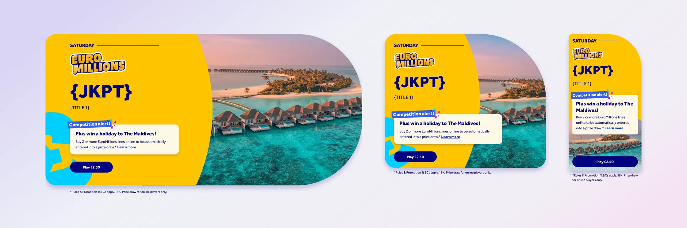
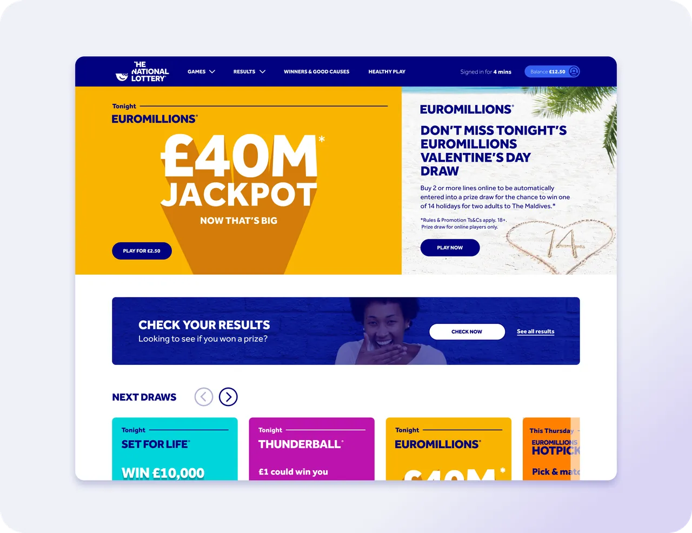
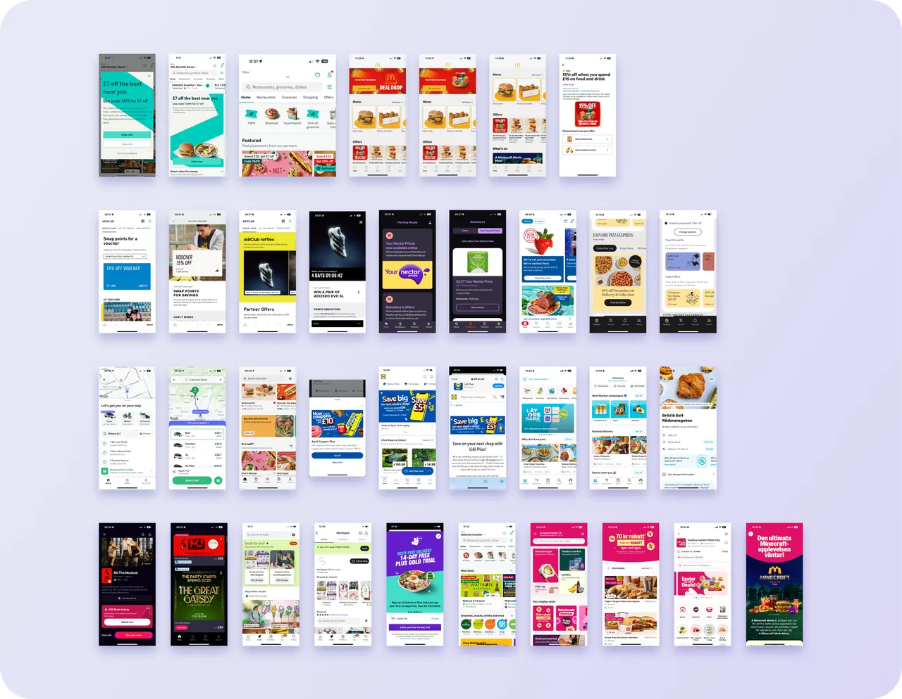
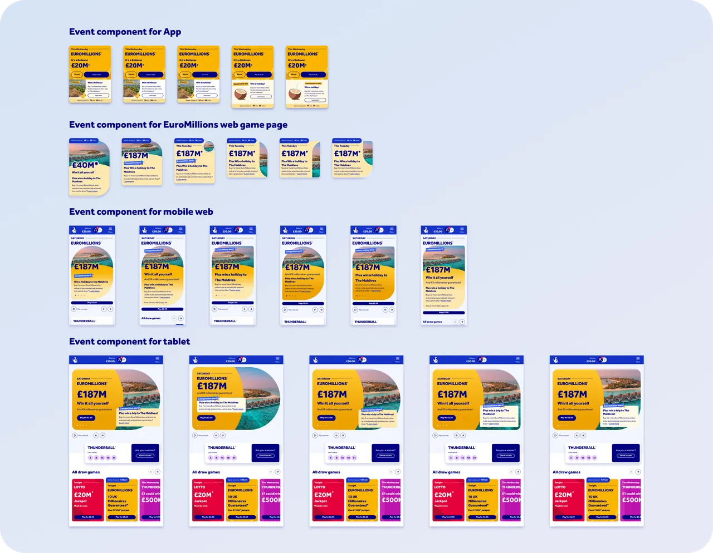
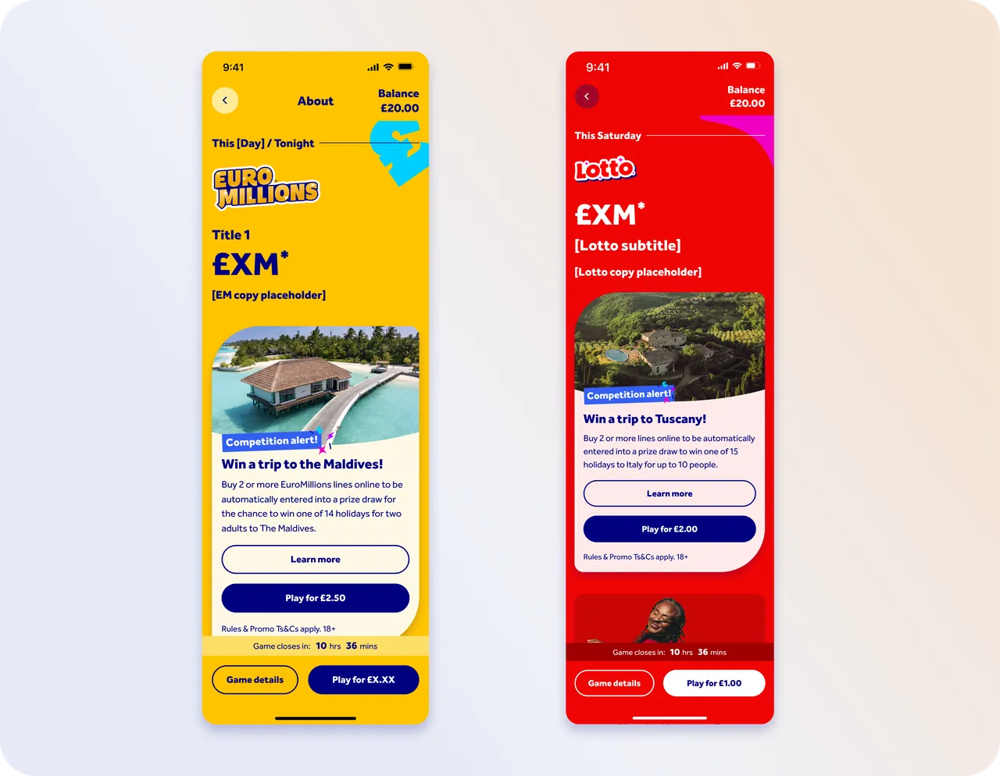
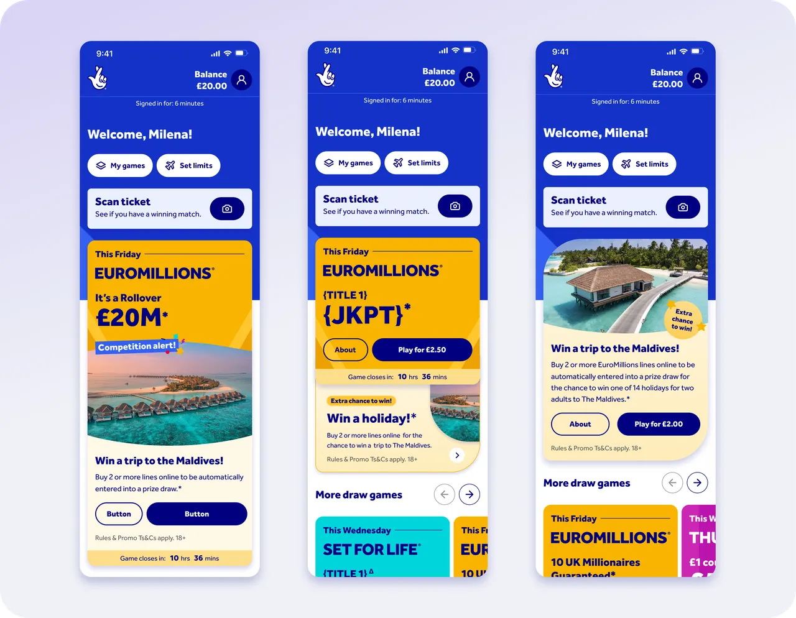
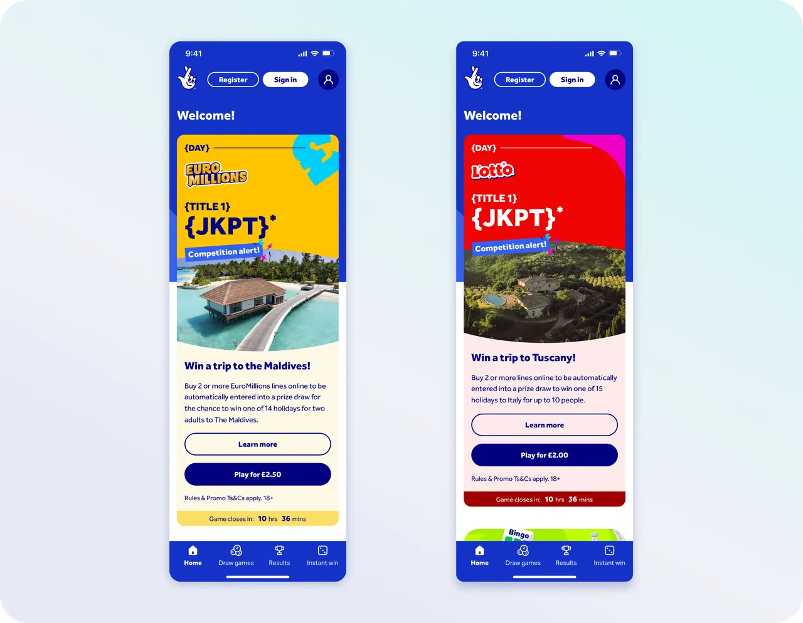

Promotional Banner System
I designed a promotional banner system for National Lottery events and prize draws across web and app. Each banner pulls in its title, jackpot, prize copy and countdown from the CMS, adapting across breakpoints while staying true to each game's brand, from EuroMillions to Lotto.
My role: Research, Information architecture, UX/UI design, prototyping


The Problem
Web had a dedicated promo slot on its homepage. The app had no homepage at all, so there was no equivalent space — event branding and awareness had nowhere to live except inside the gameplay screen itself, and even then, it wasn't consistently carried through.
Secondary Research
I looked at how food delivery, retail, loyalty and entertainment apps promote offers and events. The strongest examples led with one bold banner near the top, used large imagery and short, benefit-led headlines, and carried offers through to the point of purchase. I brought each of these into the banner system.

Ideation
Using what I'd learned, I explored where the banner could sit across the app home screen, game pages and the web play journey, and how it could flex between games, from EuroMillions to Lotto. I iterated on its shape, imagery and copy, landing on a rounded banner with full-bleed imagery and a prize-focused headline that held up across breakpoints and game brands.

The Solution
Rather than designing a bespoke banner for each event, we built one flexible, CMS-driven promotion system. It carries the same branding and awareness from the homepage through the play journey itself, and adapts across breakpoints and games, from EuroMillions to Lotto.

The Research
We tested the event advert and gameplay prompts with real players to see whether they captured attention, conveyed the right information, and built awareness of ongoing promotions like the Millionaire Maker raffle. Most participants noticed and understood the event advert as part of their normal EuroMillions journey — only one went through the full flow without registering that they’d entered a competition.
Testing three advert variations showed players wanted the game itself — not the competition — to lead: a clear, prize-focused subtitle (like “Win a holiday to the Maldives”) outperformed heavier competition-style messaging, which some players found overly salesy. Carrying the same visual style from the home screen through into gameplay prompts helped catch the attention of players who’d missed the promotion earlier, reinforcing awareness at the moment they were actually playing.
This shaped a few key decisions:
- Lead with the game tile, not the competition framing
- Use impactful, prize-focused subtitles rather than generic “competition alert” language
- Carry gameplay prompts through consistently to catch players who miss the homepage promo
- Review copy clarity where players could confuse one promotion with another

Micro Animation
I also designed a micro animation for the banner: the 'Competition alert!' tag pops in with a burst of confetti, drawing the eye to the prize without adding more content. It was descoped, but it's ready to pick up in a future release.

The Outcome
The result was a single promotional system that extended event awareness beyond the homepage CMS slot into the moments players were actually playing, closing the gap the original brief identified, without needing a bespoke design for every event.
Get in Touch
Reach out by phone or email — I'd love to hear from you.
Say helloOr email huwmandesign@gmail.com